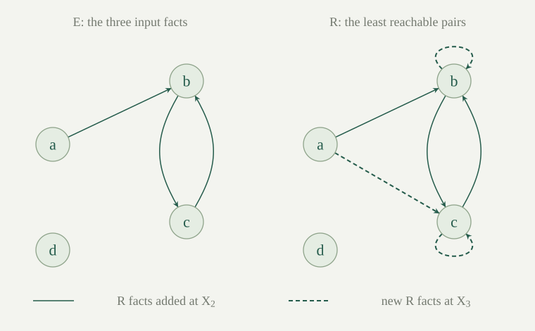

Fix a first-order language \(L\) with finite-arity function and relation symbols. A relation atom is \(R(t_0,\ldots,t_{k-1})\), where the \(t_i\) are ordinary terms. Built-in equality and negated atoms are excluded from the rules in this entry. Functions and constants are allowed inside terms.
A definite first-order Horn rule is a finite list of relation atoms \(A_1,\ldots,A_m\), its body, together with one relation atom \(B\), its head. Write it as \(A_1\land\cdots\land A_m\to B\). Its meaning is the universal closure over all variables occurring in the rule. A rule with empty body is a fact, since the empty conjunction is true. A rule theory \(P\) is a set of definite rules; write \(M\models P\) when the nonempty ordinary structure \(M\) satisfies every universally closed rule.
For example, \(E(x,y)\land R(y,z)\to R(x,z)\) applies to every choice of its three variables. Different choices need not denote different elements. This extends propositional definite rules, while retaining their requirement of one positive atomic conclusion. Rules with head \(\bot\), called constraints there, are outside our present definite fragment.
The Herbrand universe \(\mathrm{HU}_L\) is the set of closed terms of \(L\). Assume \(\mathrm{HU}_L\ne\varnothing\). The Herbrand base \(\mathrm{HB}_L\) is the set of all relation atoms whose arguments lie in \(\mathrm{HU}_L\); these are ground atoms. A nullary relation contributes one atom with no arguments.
A ground instance of a rule replaces each of its variables simultaneously by a closed term, using the existing term substitution. The same replacement is used at every occurrence of a variable. Let \(\operatorname{Gr}(P)\) be the set of all resulting ground rules. Even a finite \(P\) may have infinitely many ground instances when \(L\) has functions of positive arity.
If the original language has no closed terms, adjoin one fresh constant first. The fresh-constant construction preserves satisfiability of the old rules and supplies a nonempty term universe. It also preserves old-language consequences: every nonempty old model admits an interpretation of the new constant, and taking a reduct forgets it. In what follows, keep this enlarged language fixed whenever the extra constant is needed.
A Herbrand interpretation is a subset \(I\subseteq\mathrm{HB}_L\). Its associated term structure \(H_I\) has domain \(\mathrm{HU}_L\), interprets a function symbol by forming the corresponding term, and makes a ground relation atom true exactly when it belongs to \(I\). In particular, every ground term evaluates to itself, by term-model evaluation.
Say that \(I\) satisfies a ground rule \(A_1\land\cdots\land A_m\to B\) when
It is a Herbrand model of \(P\) when it satisfies every member of \(\operatorname{Gr}(P)\). These interpretations all have the same term domain and the same functions. Their order \(I\subseteq J\) compares which ground relation atoms are true; it does not compare arbitrary domains of ordinary models.
For every \(I\subseteq\mathrm{HB}_L\), the structure \(H_I\) is an ordinary model of \(P\) if and only if \(I\) is a Herbrand model of \(P\). Moreover, every ordinary model \(M\models P\) gives a Herbrand model
An assignment of a rule's finitely many variables to \(\mathrm{HU}_L\) is exactly a choice of closed terms for its ground instance. In \(H_I\), evaluating a substituted term gives that term itself. The ground-instance truth bridge therefore identifies satisfaction of the universally closed rule with the displayed body-to-head condition for all its ground instances. Applying this to each rule proves the first equivalence.
For the second assertion, take a ground instance whose body belongs to \(I_M\). Assign each original variable the value in \(M\) of its chosen closed replacement term. The semantic substitution lemma makes every original body atom true at this assignment. Since \(M\models P\), the original head is true there, and substitution makes its ground instance true in \(M\). That head belongs to \(I_M\), proving closure under every ground rule. The construction does not assert that \(H_{I_M}\) and \(M\) agree on arbitrary quantified sentences.
The intersection of any nonempty family of Herbrand models of \(P\) is a Herbrand model. There is at least one such model, and
is its least Herbrand model: it is a model and is contained in every other one.
The whole base \(\mathrm{HB}_L\) satisfies every definite ground rule, since it contains every possible head. Thus the family being intersected is nonempty. If all atoms of a ground rule's body lie in an intersection of models, they lie in every member of that family. Its head then lies in every member and hence in their intersection. This is the Horn intersection argument applied to ground atoms. It proves that \(L_P\) is a model. Its containment in each model follows from the definition of intersection, establishing leastness.
The inflationary consequence operator of \(P\) acts on \(X\subseteq\mathrm{HB}_L\) by
Define its stages and their union by
Each update uses the old stage for every body test; conclusions obtained in one update become usable at the next stage. These are definitions of sets. Unless additional finiteness assumptions are made, computing all of one stage need not be a finite operation.
The operator \(F_P\) is inflationary and monotone. Its stages satisfy \(X_n\subseteq X_{n+1}\), and every Herbrand model \(I\) contains every \(X_n\). If \(X_{n+1}=X_n\), all later stages equal \(X_n\).
Inflationarity follows from the first term of the union defining \(F_P\). If \(X\subseteq Y\), a finite body contained in \(X\) is contained in \(Y\), so every head added to \(X\) is also added to \(Y\). This proves monotonicity and, with inflationarity, the increasing-stage assertion.
For a fixed model \(I\), induct on \(n\) with invariant \(X_n\subseteq I\). The empty stage satisfies it. At the next stage, old atoms remain in \(I\). A new head comes from a body contained in \(X_n\), hence in \(I\), so rule satisfaction puts the head in \(I\). Finally, applying the same operator to two equal consecutive stages gives the next equality; induction propagates it through all later stages.
The specified interpretation \(X_\omega\) is a Herbrand model of \(P\), is fixed by \(F_P\), and equals the least Herbrand model \(L_P\). Consequently a ground atom belongs to \(L_P\) exactly when it appears at some finite stage.
Take a ground rule whose body atoms all belong to \(X_\omega\). For each of its finitely many body atoms choose a stage containing it. Let \(n\) be the maximum of those stage numbers; for an empty body take \(n=0\). The stages increase, so the whole body lies in \(X_n\). Its head belongs to \(X_{n+1}\), hence to \(X_\omega\). This proves that the union is a model. No single stage is required to contain the bodies of every rule: the bound \(n\) depends on the chosen rule instance.
A set satisfying all ground rules gains no new heads under \(F_P\), so \(F_P(X_\omega)=X_\omega\). By the stage invariant, every model contains \(X_\omega\). Thus \(X_\omega\) is the least model and equals the intersection \(L_P\). Membership in the union is precisely appearance at some finite stage, proving the last assertion.
For every ground relation atom \(A\),
On the right, consequence quantifies over all nonempty ordinary \(L\)-structures, including structures whose elements are not denoted by ground terms.
If \(A\in L_P\), take an arbitrary \(M\models P\). The grounding bridge supplies its Herbrand model \(I_M\). Leastness gives \(L_P\subseteq I_M\), so \(A\in I_M\), which means \(M\models A\).
Conversely, \(H_{L_P}\) is a nonempty ordinary model of \(P\), by the same bridge. If \(P\models A\), that particular model makes \(A\) true. A ground atom is true in this specified term structure exactly when it belongs to \(L_P\). This proves the reverse implication and also supplies a countermodel whenever a ground atom is absent.
In the language with constant \(0\), unary function \(s\), and unary relation \(R\), take the fact \(R(0)\) and rule \(R(x)\to R(s(x))\). Then
No finite stage is a fixed point, even though the theory has just two rules.
Every ground term is \(s^k(0)\), by induction on its finite term tree. At stage zero there are no atoms. If the displayed formula holds at stage \(n\), the next update retains those atoms, adds the fact at exponent zero, and adds the successor of each exponent below \(n\). These are exactly the exponents below \(n+1\). This proves the stage formula by induction, including the empty initial stage.
The terms \(s^k(0)\) are distinct as syntactic terms: the number of \(s\)-constructors is \(k\). Therefore \(R(s^n(0))\) is absent from \(X_n\) and present in \(X_{n+1}\). Taking the union proves the least-model formula. Syntactic distinctness here imposes no injectivity requirement on the interpretation of \(s\) in an arbitrary ordinary model.
Suppose \(L\) has exactly \(c\ge1\) constant symbols, no functions of positive arity, and finitely many relation symbols. Let \(P\) be finite. The Herbrand base is finite, with
The sum runs over relation symbols, including nullary ones. The stage \(X_N\) is fixed and equals \(L_P\). Enumerating all ground rules and performing \(N\) simultaneous updates therefore decides \(P\models A\) for any ground atom \(A\).
Every closed term is a constant, since there is no positive-arity constructor. For a relation of arity \(r\), its ground atoms are exactly its \(c^r\) constant tuples. Different relation symbols or different syntactic tuples give different atoms, proving the cardinality formula. A rule with \(k\) variables has \(c^k\) assignments of constants. As \(P\) is finite, its full grounding is a finite set that can be listed by finite nested loops.
Identify this grounding with the finite propositional Horn rules on the ground base. Its simultaneous update is exactly \(F_P\). Any update before stabilization adds at least one previously absent ground atom. If there were a nonstationary update after \(N\) rounds, no earlier round could have been stationary by persistence of equality; the first \(N+1\) updates would then add at least \(N+1\) distinct atoms to a base of size \(N\), a contradiction. Thus \(X_N\) is fixed and is the union of all stages, hence equals \(L_P\).
Each update scans finitely many rules and tests finitely many membership conditions. Test whether the query atom lies in the resulting finite set, and use ground-consequence correctness. This gives the claimed terminating procedure. It requires the finite ground-base hypotheses, which the preceding successor example does not satisfy.
Use four distinct constant symbols \(a,b,c,d\), binary relations \(E,R\), no other symbols, and the three facts \(E(a,b),E(b,c),E(c,b)\). Add
The least interpretation consists of those three \(E\)-facts and the six \(R\)-facts
Stage \(X_1\) contains exactly the edge facts. Stage \(X_2\) also contains \(R(a,b),R(b,c),R(c,b)\), obtained by the first rule. At stage \(X_3\), the second rule additionally gives \(R(a,c),R(b,b),R(c,c)\). Checking the finite list shows that taking one further outgoing edge from any listed reachable pair produces another listed pair. The first rule adds nothing further, and no rule has an \(E\)-head apart from the three facts. Thus \(X_3\) is fixed and is the least interpretation.
For example, \(P\models R(a,c)\), whereas \(P\not\models R(d,a)\) by the ground-consequence theorem. These conclusions concern the written constants even though an arbitrary ordinary model is allowed to interpret different constant symbols by the same element. The general bound here is \(N=2\cdot4^2=32\); the concrete calculation stabilizes much sooner.

In the reachability example, the least interpretation omits \(R(d,a)\). Do the rules therefore entail \(\neg R(d,a)\)?
No. Keep the same four-element term domain and the three edge facts, but interpret \(R\) as every ordered pair. Both rules hold: every required reachable pair is present. This is an ordinary model of the rules in which \(R(d,a)\) is true, so the negation is not a consequence. The least term model makes \(R(d,a)\) false, so the positive atom is not a consequence either. A least model identifies forced positive facts; its false atoms need not be false in every model.
In the language with only a constant \(a\) and unary relation \(Q\), take the sole fact \(Q(a)\). Every Herbrand model of this rule satisfies \(\forall x\,Q(x)\). Does the rule entail that sentence in ordinary first-order logic?
No. The sole ground term is \(a\), so the sole ground atom is \(Q(a)\). The rule forces it, and the resulting one-element term model satisfies \(\forall x\,Q(x)\). But take an ordinary structure with domain \(\{0,1\}\), interpret \(a\) as \(0\), and let \(Q\) hold only at \(0\). The fact is true and the universal sentence is false at \(1\). The extra element is not denoted by any ground term. Thus the consequence theorem needs its ground-atom qualification; the grounding bridge does not identify all quantified truths of arbitrary models with those of term models.